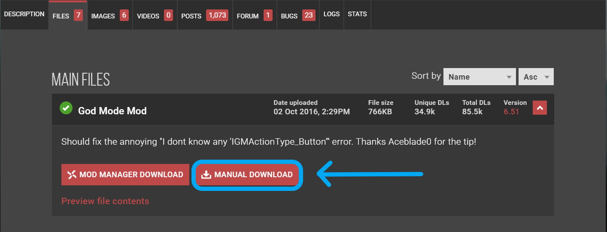
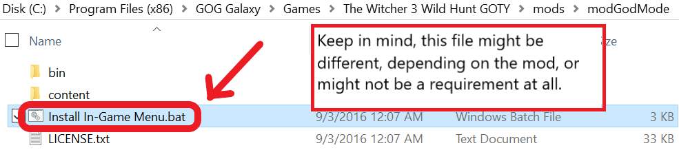

To install your first mod, follow these simple steps:
- Download your desired mod 
- Locate your game installation path
- Open an existing or create a mods folder
- Extract the mod files into the mods folder
- Complete any other instructions provided by the mod author 
- Launch the game